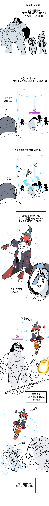
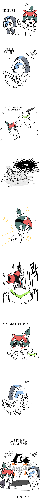
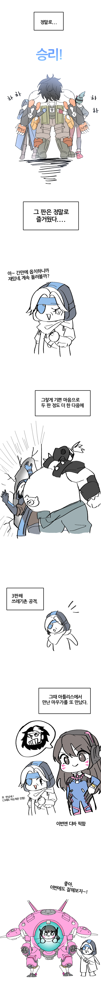
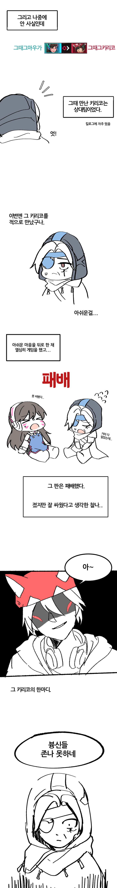
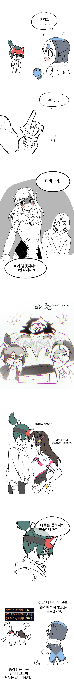
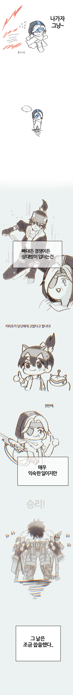
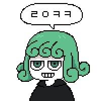

47 · 30 · 4 시간 전 · 원문






수집 당시 댓글 30개
사람말을들으라고 · 13 시간 전
Literaly · 13 시간 전
전챗은 나쁜 기능이다
블루아카이브 · 13 시간 전
동명이인이라 생각하자
Rhesus · 13 시간 전
그런 개빻은 인성을 가진 유저들은 고운 키리코를 해서는 안된다
↳ 답글 · 익명

↳ 답글 · qlsn · 13 시간 전
모이라가 함께한다
↳ 답글 · 環境安全이經營의第1原則 · 3 시간 전
보통 표독은 메르시고
대선후보급 정치는 아장연 담당이긴해
CeSium · 13 시간 전
힐러 · 13 시간 전
빠대나 일겜에서 입은 왜 터는건지 모르겠음
키나루디안마기 · 11 시간 전
빠대에서도 입 터는 사람 많음
의원소 · 11 시간 전
딜러는 왜 취급도 안해주냐
↳ 답글 · 불꽃남자김상원 · 4 시간 전
탱보다 킬,딜 낮으면 어그로 싸개만 시켜야하긴함
인프제 · 4 시간 전
어느 겜이든 서폿 자주하는 입장에서 말하자면 키리코 쟤도 기억하고 고로시하는거임.
폿의 슈퍼플레이가 많다는것은 그만큼 팀이 개씹창나고있다는거임. 비유하자면 월드컵마다 약소국팀 골키퍼들이(코스타리카의 케일러나바스, 카보베르데의 보1지냐) 스타플레이어되는것과같음;
↳ 답글 · 우미라 · 4 시간 전
그래서 힐러 캐리로 이겼으니 별말안했나보네 ㅋㅋ
↳ 답글 · 굶주린이 · 4 시간 전
오버워치는 탱이 골키퍼야... 탱이 슈퍼플레이가 뜨면 팀이 개씹창...
↳ 답글 · Sjdk · 3 시간 전
엥 탱은 체급이 쌔지만 팀원 서포트 여하에 따라 성능에 제약 걸린 구조인데 활약할 환경이 만들어졌다는건 양학이 아닌이상 팀이 잘 지원해주고 있다는 뜻 아닌가
↳ 답글 · 갓갓 갓갓갓 · 4 시간 전
옵치는 포지션이 아니라 영웅에 따라서 슈퍼플레이가 자주 나오냐 아니냐 갈리는데
옵치 좀 해보면 아는데 오히려 슈퍼플레이는 힐러쪽에서 제일 많이 나옴
에쿠어스 · 4 시간 전
그래서 나는 닉 가리기 하고 한다구!
착한생각올바른생각 · 4 시간 전
키리코도 다른 기분으로 기억하고 있었겠지
왜용 · 4 시간 전
너 때문에 우리팀 질뻔했다 라는 극찬이잖아
↳ 답글 · 맨날놀고싶어 · 4 시간 전
당신의 실력은 굉장히 출중하군요
↳ 답글 · 왜용 · 4 시간 전
솔직히 못했으면 말도 안걸었을거잖아 ㅋㅋㅋㅋㅋ
너도뒤질래 · 4 시간 전
상대팀이랑 싸우는게임에서 상대한테 저렇게 시비터는 애들 이해가 안됨. 난 지면 잘하는 적보다 못한 아군한테 화가 존나 나고 이기면 기분 좋아서 시비 걸 생각도 안나는데
독고무영 · 4 시간 전
커얌둥이들ㅋㅋㅋ
지나가던A · 4 시간 전
키리코 입장에선 자기가 케어 안해주니 아무것도 못하는것처럼 보였겠네
어떻게된거야 · 3 시간 전
증강사기 쳐놓고 그조합으로 지냐는 입 터는거 볼때마다 그냥 웃김 ㅋㅋ
모나베일 · 3 시간 전
채팅으로 채금이나 밴 당하는 애들이 제일 병신같음 특히 나이쳐먹고 그러는사람들
CEASAR · 1 시간 전
빠대에서 인생걸린것처럼 구는 병신들 꽤 있긴함
후욱후욱오호혹 · 1 시간 전
감정 통제능력이 떨어지고 미숙하여 스스로를 통제하지 못하는 모습을 보니 좋은 인재는 아님
멘헤라라고 생각하면 이해될듯
좋은 동료와 별로인 동료 구분은 저런걸 보고 하는거임
게임 잘하면서 매너도 좋은 사람이랑 친구하면 되는것
그리고 저런 상태의 상대에게 반응해주는건 긁어부스럼일 뿐임
khruangbin · 43 분 전
걍 작가가 혼자서 마우가도 끼워넣은거지
키리코는 둘이서만 잘했다고 생각하는거겠지
댓글
수집 당시 댓글 30개
사람말을들으라고 · 13 시간 전
Literaly · 13 시간 전
전챗은 나쁜 기능이다
블루아카이브 · 13 시간 전
동명이인이라 생각하자
Rhesus · 13 시간 전
그런 개빻은 인성을 가진 유저들은 고운 키리코를 해서는 안된다
· 익명

· qlsn · 13 시간 전
모이라가 함께한다
· 環境安全이經營의第1原則 · 3 시간 전
보통 표독은 메르시고
대선후보급 정치는 아장연 담당이긴해
CeSium · 13 시간 전
힐러 · 13 시간 전
빠대나 일겜에서 입은 왜 터는건지 모르겠음
키나루디안마기 · 11 시간 전
빠대에서도 입 터는 사람 많음
의원소 · 11 시간 전
딜러는 왜 취급도 안해주냐
· 불꽃남자김상원 · 4 시간 전
탱보다 킬,딜 낮으면 어그로 싸개만 시켜야하긴함
인프제 · 4 시간 전
어느 겜이든 서폿 자주하는 입장에서 말하자면 키리코 쟤도 기억하고 고로시하는거임.
폿의 슈퍼플레이가 많다는것은 그만큼 팀이 개씹창나고있다는거임. 비유하자면 월드컵마다 약소국팀 골키퍼들이(코스타리카의 케일러나바스, 카보베르데의 보1지냐) 스타플레이어되는것과같음;
· 우미라 · 4 시간 전
그래서 힐러 캐리로 이겼으니 별말안했나보네 ㅋㅋ
· 굶주린이 · 4 시간 전
오버워치는 탱이 골키퍼야... 탱이 슈퍼플레이가 뜨면 팀이 개씹창...
· Sjdk · 3 시간 전
엥 탱은 체급이 쌔지만 팀원 서포트 여하에 따라 성능에 제약 걸린 구조인데 활약할 환경이 만들어졌다는건 양학이 아닌이상 팀이 잘 지원해주고 있다는 뜻 아닌가
· 갓갓 갓갓갓 · 4 시간 전
옵치는 포지션이 아니라 영웅에 따라서 슈퍼플레이가 자주 나오냐 아니냐 갈리는데
옵치 좀 해보면 아는데 오히려 슈퍼플레이는 힐러쪽에서 제일 많이 나옴
에쿠어스 · 4 시간 전
그래서 나는 닉 가리기 하고 한다구!
착한생각올바른생각 · 4 시간 전
키리코도 다른 기분으로 기억하고 있었겠지
왜용 · 4 시간 전
너 때문에 우리팀 질뻔했다 라는 극찬이잖아
· 맨날놀고싶어 · 4 시간 전
당신의 실력은 굉장히 출중하군요
· 왜용 · 4 시간 전
솔직히 못했으면 말도 안걸었을거잖아 ㅋㅋㅋㅋㅋ
너도뒤질래 · 4 시간 전
상대팀이랑 싸우는게임에서 상대한테 저렇게 시비터는 애들 이해가 안됨. 난 지면 잘하는 적보다 못한 아군한테 화가 존나 나고 이기면 기분 좋아서 시비 걸 생각도 안나는데
독고무영 · 4 시간 전
커얌둥이들ㅋㅋㅋ
지나가던A · 4 시간 전
키리코 입장에선 자기가 케어 안해주니 아무것도 못하는것처럼 보였겠네
어떻게된거야 · 3 시간 전
증강사기 쳐놓고 그조합으로 지냐는 입 터는거 볼때마다 그냥 웃김 ㅋㅋ
모나베일 · 3 시간 전
채팅으로 채금이나 밴 당하는 애들이 제일 병신같음 특히 나이쳐먹고 그러는사람들
CEASAR · 1 시간 전
빠대에서 인생걸린것처럼 구는 병신들 꽤 있긴함
후욱후욱오호혹 · 1 시간 전
감정 통제능력이 떨어지고 미숙하여 스스로를 통제하지 못하는 모습을 보니 좋은 인재는 아님
멘헤라라고 생각하면 이해될듯
좋은 동료와 별로인 동료 구분은 저런걸 보고 하는거임
게임 잘하면서 매너도 좋은 사람이랑 친구하면 되는것
그리고 저런 상태의 상대에게 반응해주는건 긁어부스럼일 뿐임
khruangbin · 43 분 전
걍 작가가 혼자서 마우가도 끼워넣은거지
키리코는 둘이서만 잘했다고 생각하는거겠지